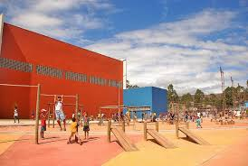
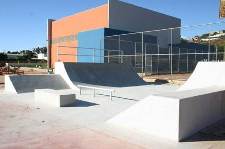
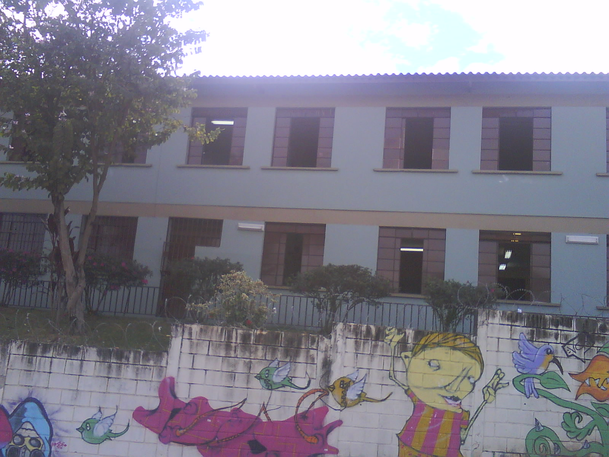
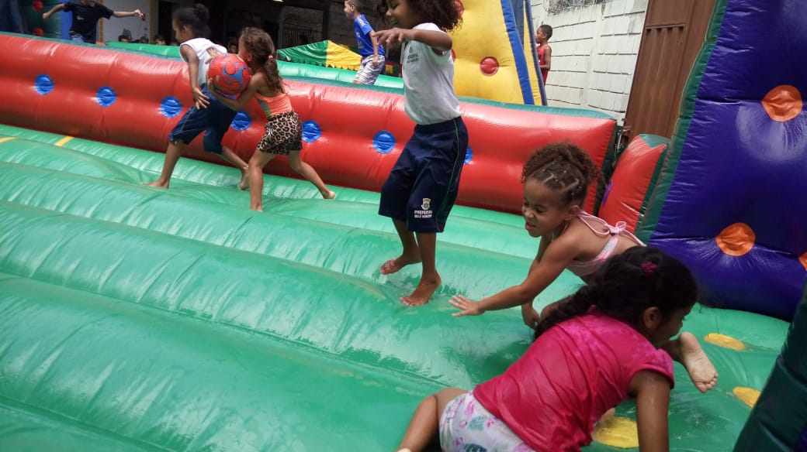
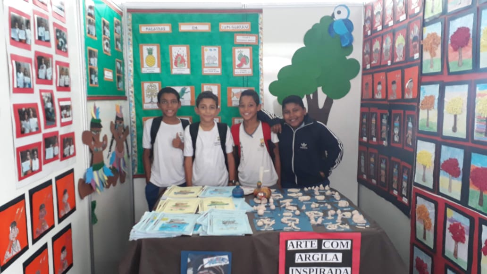
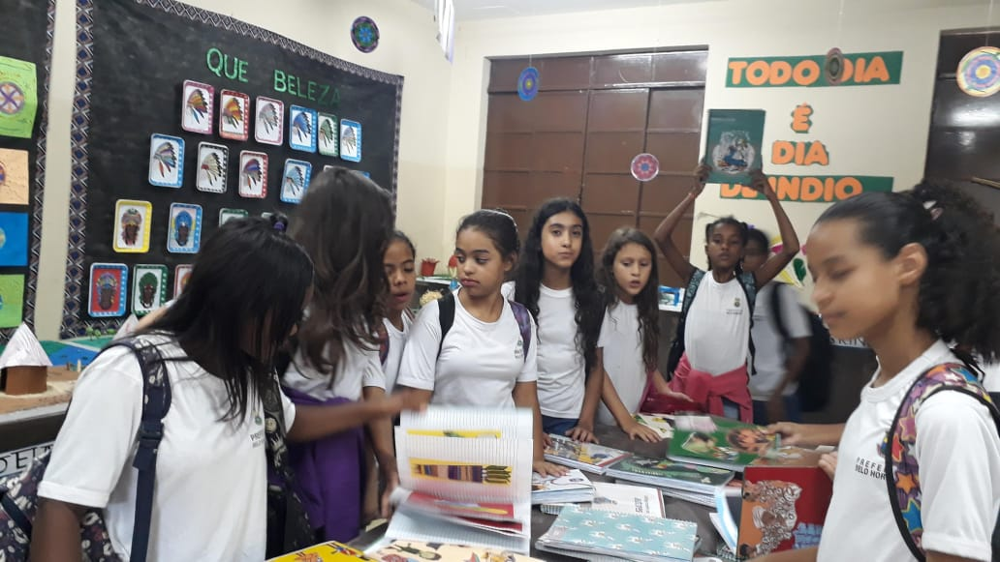

HISTÓRIA

CONJUNTO HABITACIONAL ERNESTO DO NASCIMENTO
O Conjunto Habitacinal Ernesto do Nascimento se localiza na Reginal Barreiro da cidade de Belo Horizonte.
OutrOs nOmes: Jardim Vale do Jatobá
• Origem dO bairrO: A área onde se localiza o bairro compunha a região chamada Jatobá. Em 1980, foi construído o Conjunto Habitacional Ernesto do Nascimento, de casas populares.
• Referências urbanas dO presente: Avenida Senador Levindo Coelho
• EXempLO de dOcumentO dO apcbH sObre O bairrO: Decreto Municipal 7.132 de 31 de janeiro de 1992:aprova o conjunto, que passava a fazer parte do bairro Jatobá...Leia mais

COMUNIDADE
A Comunidade do bairro é formada principalmente por trabalhadores e suas famílias...Leia mais

PISTA DE SKETE
Além da pista de skete o Complexo Poliesportivo do Vale do Jatobá também tem outras atrações como a quadra, o campo, o parquinho e um pequeno espaço verde.
A pista de skete do Complexo Esportivo do Vale do Jatobá é uma ótima opição para praticar ... Leia mais
ESCOLA MUNICIPAL LUIZ GONZAGA JÚNIOR
Um dos pontos de referência mais importantes do Conjunto Habitacinal Ernesto do Nascimento é a
Escola Municipal Luiz Gonzaga Júnior, local de produção de conhencimento, cultura, praticas de esportes, encontros da
comunidade e de muita diversão... Clique aqui para acessar o facebook da escola




Conhecer os aredores de onde moramos é muito importante!
Veja o vídeo e conheça um pouco sobre o bairro de Marcelo...